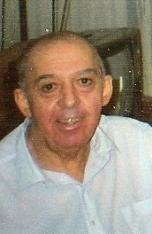
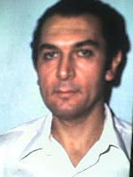
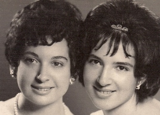

Manuel Victorio Luis - nacido en Córdoba el 25 de agosto de 1928 y fallecido en San Juan en 1982. Cursó sus estudios primarios en la Escuela Normal A. Carbó; el secundario en el Colegio Nacional de Monserrat y medicina en la Universidad Nacional de Córdoba. Ejerció como médico clínico en la ciudad de San Juan.
Casado con Nélida Moral.
Un hijo: Manuel Antonio Casartelli Moral
|

Antonio Marcelo- nacido en Pozo del Molle, (provincia de Córdoba),
el 25 de octubre de 1930 y fallecido en Córdoba Capital , el 27 de diciembre de 2007. Cursó sus estudios: primarios, en la Escuela Normal Alejandro Carbó; el secundario, en el Colegio Nacional de Monserrat. y Medicina, en la Universidad nacional de Córdoba. Ejerció como Médico, especialista en Urología.
Casado Con Leda Elsa Bocco, bioquímica. |

Argentino Florencio o Florentino - nacido en Córdoba Capital, donde vive actualmente, el 5 de abril
de 1932. Cursó sus estudios primarios en la Escuela Normal Alejandro Carbó; el secundario en el Colegio Nacional de Monserrat y Universitarios en la Universidad Nacional de Córdoba sin concluir. Trabajó como no docente en la Universidad nacional de Córdoba, en la Dirección General de Administración, y como operador telefónico en la ENTEL, que después fue Telecom, como operador bilingüe y por último como supervisor bilingüe.
Casado con Ana María Oliva el 3 de septiembre de 1974.
Un hijo: Gabriel Ernesto Casartelli Oliva.
|

María Cristina y Graciela María Francisca
Ambas realizaron sus estudios primarios y secundarios en la Escuela Normal "Alejandro Carbó", obteniendo el título de Maestra Normal Nacional.
María Cristina nacida en Córdoba Capital el 17 de septiembre de 1940, donde vive en la actualidad. Ejerció como docente hasta su jubilación. Estuvo casada y tuvo dos hijos de esa uniónCristina y Marcelo que vive en Ingleterra y tiene un hijo
Graciela María F. nacida en Córdoba Capital el 3 de diciembre de 1946, es Psicóloga (Universidad Nacional de Córdoba) y se ha desempeñado en el ámbito gubernamental y privado hasta su jubilación. Estuvo casada con Jorge Daniel Ortega - Técnico Tornero (fallecido en 1978) : una hija, Graciela Jorgelina Ortega Casartelli.
Posteriormente, en pareja con Alberto Javier Jiménez- Ingeniero Electricista, tuvo un hijo, Javier Matías Jiménez Casartelli. |